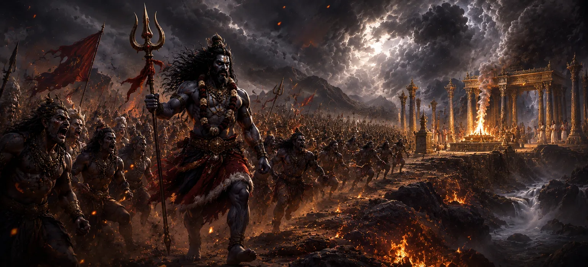

This chapter describes Vīrabhadra’s formidable march toward Dakṣa’s sacrifice. Empowered by Lord Shiva and accompanied by countless gaṇas, divine attendants, and fierce celestial beings, Vīrabhadra advanced with a single purpose—to uphold divine justice. As the army moved forward, ominous signs appeared throughout the universe, announcing the approach of Shiva’s righteous response to the insult suffered by Sati and the disrespect shown toward the Supreme Lord.
Having manifested Vīrabhadra from His divine power, Lord Shiva entrusted him with the mission of confronting Dakṣa’s sacrifice. Shiva’s command was not driven by personal vengeance but by the need to restore righteousness and cosmic balance.
Upon receiving Shiva’s command, countless gaṇas assembled around Vīrabhadra. These devoted attendants of Shiva came from every direction, eager to serve their Lord and participate in the sacred mission. Their appearance reflected both devotion and immense power.
As the divine army advanced, unusual signs appeared throughout creation. The earth trembled, fierce winds swept across the skies, and celestial beings sensed that a moment of great consequence was approaching. Nature itself seemed to respond to the unfolding events.
As Vīrabhadra and the gaṇas drew closer to the sacrificial grounds, tension spread among those present at the ceremony. Many began to sense that the consequences foretold by the celestial proclamation were about to become reality.
Vīrabhadra’s journey demonstrates complete dedication to the divine will of Lord Shiva.
The chapter reveals that injustice ultimately attracts a response from the cosmic order.
True strength is exercised in service of righteousness rather than personal gain.
Reports of Vīrabhadra’s approach began to spread through Dakṣa’s assembly. Those who had ignored warnings now felt uncertainty and fear as they realized that divine justice could no longer be avoided.
Although the decisive confrontation had not yet begun, the atmosphere was charged with anticipation. The universe seemed to pause as Vīrabhadra and his forces prepared to enter the sacrificial grounds and fulfill Shiva’s command.
Vīrabhadra’s march reminds us that divine justice often approaches gradually but inevitably. The chapter teaches that actions have consequences and that righteousness, though sometimes delayed, is always upheld by the Divine. Faithful service to a noble purpose transforms power into a force for good.
As he advanced toward the sacrificial grounds, Vīrabhadra remained completely focused on the mission entrusted to him by Lord Shiva. Neither fear nor hesitation touched his mind. His unwavering determination reflected his absolute devotion to Shiva and his commitment to restoring righteousness wherever it had been violated.
The march of Vīrabhadra was more than the movement of an army—it was the approach of divine judgment. Gods, sages, celestial beings, and even the forces of nature seemed to pause in anticipation. All awaited the moment when the consequences of Dakṣa’s actions would finally unfold before the eyes of the universe.
"Divine justice may advance in silence, but its arrival is certain."
Continue exploring the sacred events of Sati Khanda as Vīrabhadra advances toward Dakṣa’s sacrifice and ominous signs begin to appear, warning all present of the divine justice that is about to unfold.